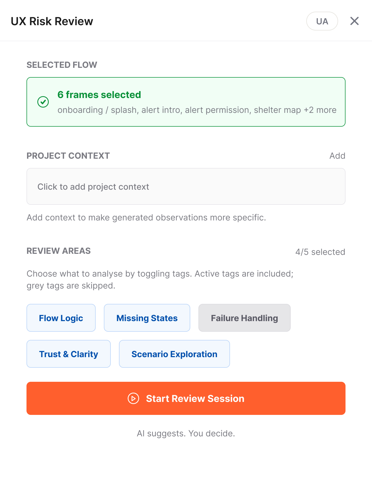
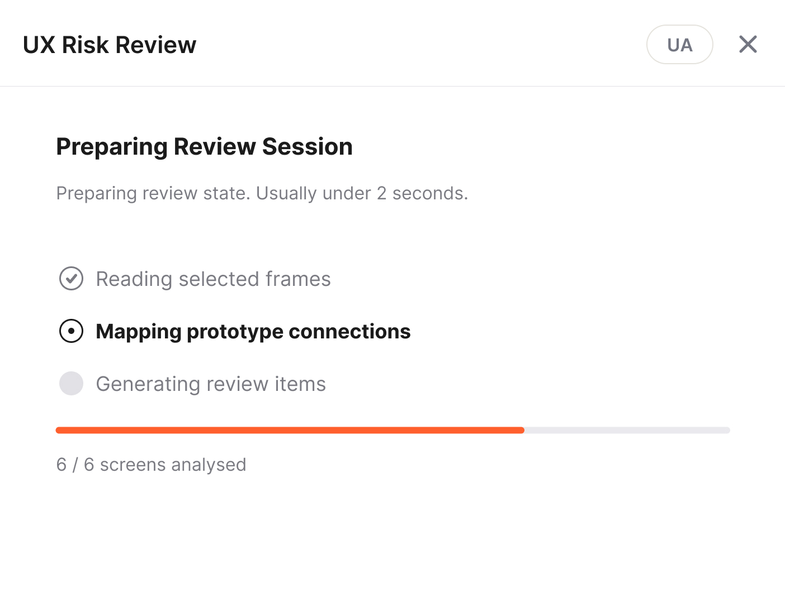
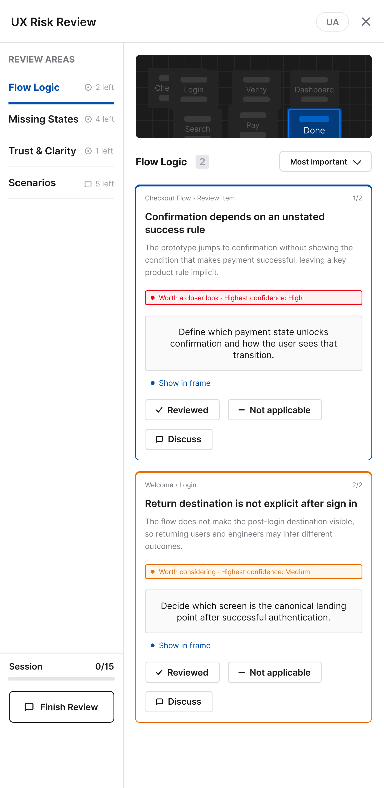
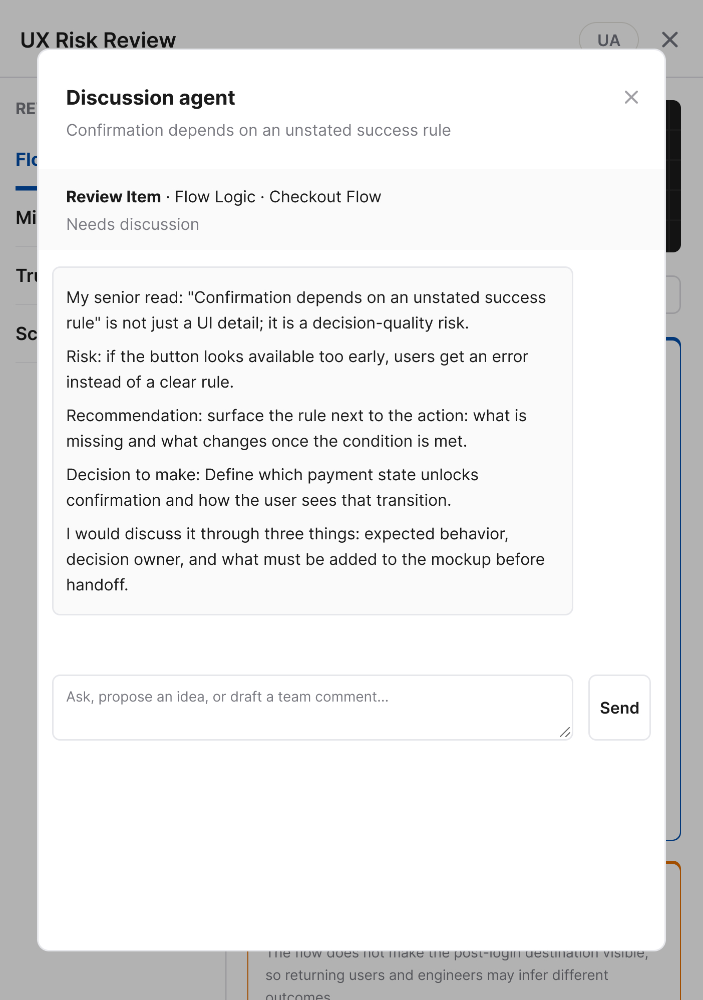
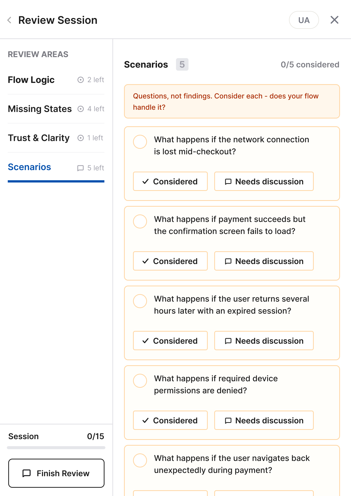
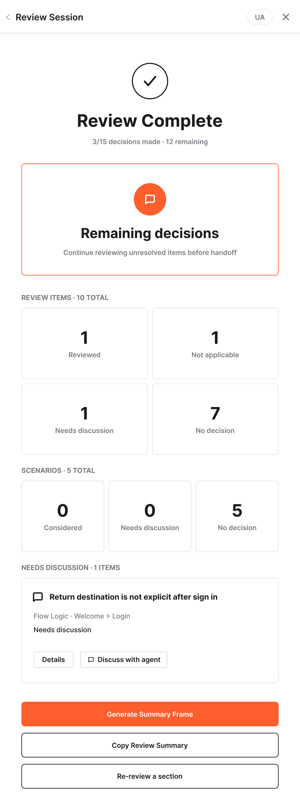
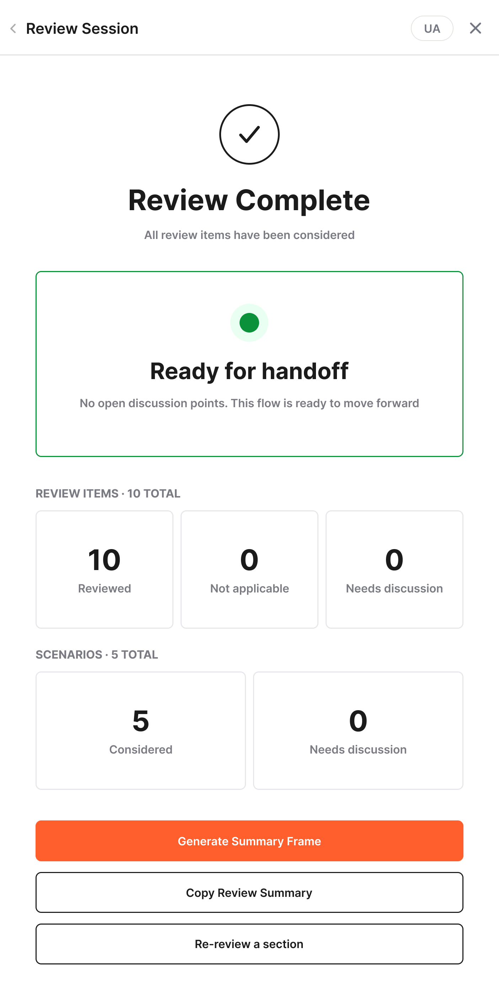
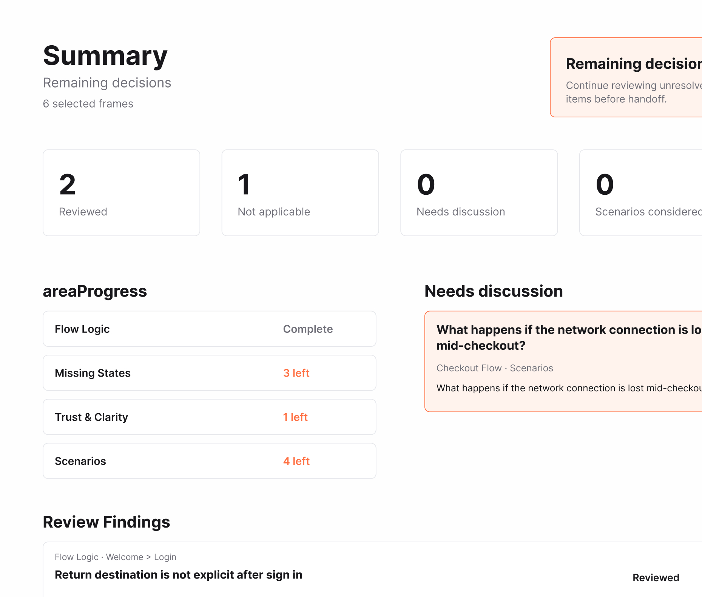

Review navigation, transitions and decision points.
Case Study
2026
UX Risk Review
AI-powered Figma plugin that helps Product Designers systematically review user flows before handoff.

01
The Missing Step
Before handoff, every screen has been designed.
Not every scenario has been reviewed.
Loading states, empty states, error handling and recovery flows are still often overlooked. Not because designers don't know they exist, but because there isn't a structured way to review a flow before handing it over to development.
That problem became the starting point for this research.
Check loading, empty and edge-case scenarios.
Evaluate errors, recovery and fallback flows.
Identify issues that may confuse users.
Review alternative paths beyond the happy flow.
02
Research
The research explored how Product Designers review user flows before handoff and where AI could provide meaningful support.
Qualitative interviews were combined with secondary research,
community discussions
and a review
of existing AI design tools.
Research Methods
01
Interviews
Conversations with Product Designers about review workflows, handoff practices and overlooked scenarios.
02
Secondary Research
Industry articles, UX resources and best practices around design reviews and edge cases.
03
Community Insights
Discussions from design communities highlighting recurring review challenges and blind spots.
04
Competitor Analysis
Analysis of AI design assistants to understand current approaches, limitations and opportunities.
Research Insights
Reviews rely on memory
Without a structured process, important scenarios are easy to overlook.
Risks are discovered too late
Many UX issues surface during development or QA, when changes become more expensive.
Reviews need structure
AI creates the most value by guiding the review process, not replacing design decisions.
03
The Review Experience

Flow Detection. Automatically recognizes the selected user flow.
Project Context. Grounds the review in product-specific information.
Review Areas. Choose what to validate before starting the session.

Flow Analysis. Maps selected screens, prototype connections and project context.
Review Summary. Shows what was analysed and how findings are distributed across review areas.
Clear Expectations. Previews the scope and importance of findings before the session begins.

Flow Analysis. Maps selected screens, prototype connections and project context.
Review Summary. Shows what was analysed and how findings are distributed across review areas.
Clear Expectations. Previews the scope and importance of findings before the session begins.

Structured Review. Every finding is grouped by review area and presented with clear context.
AI Discussion. Each observation can be discussed with an AI agent to explore alternatives, ask follow-up questions or challenge the suggestion.
Decision Tracking. Mark findings as reviewed, not applicable or requiring discussion to keep the review process transparent.
Senior Design Perspective. The agent responds as an experienced Product Designer, explaining not only what might be wrong, but why it matters.
Instead of providing final answers, the agent highlights trade-offs, asks clarifying questions and helps teams make informed design decisions.


Review beyond the happy path. Highlights user scenarios that could otherwise be missed during review.

Review Summary. Generate a structured summary that captures decisions, unresolved items and review progress.
Share Anywhere. Copy the summary into Slack, Linear, Jira or any team chat or generate a Figma frame that stays alongside the design files.
One Source of Truth. Keep review decisions, discussion points and unresolved questions connected to the design throughout development.
Decision Overview. Summarizes reviewed items, scenarios and discussion points in one place.
Ready for Handoff. The review is complete once every discussion point has been resolved.


04
Built for Product Teams
Bilingual Interface
Switch between English and Ukrainian at any time.
Project Context
Grounds every review in product-specific information.
Discussion Agent
Supports design decisions through discussion.
Team-Ready Output
Generate summaries or Figma review frames.
Session Memory
Continue working on the current review or start a new session without losing previous context.
05
Beyond the MVP
Several ideas were intentionally left out of the first version to keep the core review experience focused and lightweight.
Team Knowledge Base
Build a shared library of recurring UX risks, review patterns and decisions across projects.
Integrations
Send review findings and unresolved discussion points directly to Jira, Linear or Slack.
Design System Awareness
Use existing components, patterns and guidelines as additional context during the review.
Review Templates
Save reusable review configurations for common flows such as onboarding, checkout or authentication.
06
Reflection
The hardest part wasn't adding AI to the workflow.
It was defining where the designer takes over.
Instead of trying to replace design decisions, the goal became helping designers make better ones.
The biggest challenge was finding the boundary between guidance and autonomy. The AI needed to identify risks, explain their impact and ask the right questions without becoming another stakeholder making product decisions.
That boundary ultimately shaped the entire product. Every recommendation is designed to support critical thinking rather than replace it, leaving the final decision with the designer.
It strengthens it.